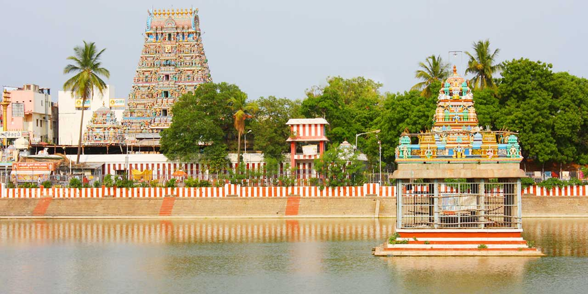

- Beach in chennai
- temple and Religous place
- Museums and forts
- Nature and park
- Modern attractive places
Beach in chennai
- Marina Beach – World’s second-longest urban beach (13 km). Famous for morning walks, street food, and statues of Tamil leaders.
- Elliot’s Beach (Besant Nagar Beach) – A quieter alternative to Marina, popular among youngsters , and also more fun games are available and sea foods are also available.
- Covelong Beach (Kovalam Beach) – Known for water sports and fishing villages, and in this sea is filled with rock and best for photoshoot
temple and Religous place
- Kapaleeshwarar Temple (Mylapore) – A 7th-century Dravidian-style temple dedicated to Lord Shiva. 
- Parthasarathy Temple (Triplicane) – One of the oldest temples in Chennai, dedicated to Lord Krishna.
- sanThome cathedral Basilica – A Roman Catholic church built over the tomb of St. Thomas the Apostle.
- Thiruvanmyuir temple– it is an ancient temple of lord shivan and it is also a tourist spot most of the foreign people visit


location

Museums and forts
- Government Museum (Egmore) – Second-oldest museum in India, famous for archaeology, art, and bronze sculptures.
- Fort St. George – Built by the British in 1644, houses a museum and Tamil Nadu Legislative Assembly.

Nature and park
- Guindy National Park & Snake Park – A protected forest area inside the city with deer, blackbucks, and reptiles.
- Semmozhi Poonga – A botanical garden with rare plant species.
- VGP Universal Kingdom & MGM Dizzee World – Popular amusement parks on ECR (East Coast Road).
- Cholamandal Artist 's Village – Hub for modern art and exhibitions.
- Express Avenue Mall & Phoenix MarketCity – For shopping and entertainment.
Modern attractive places


vgp universal kingdom location
mgm location

cholamandal art galary

express avenue location phenix mall location